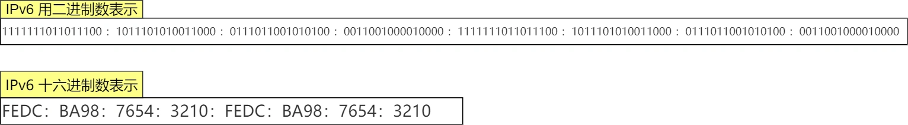
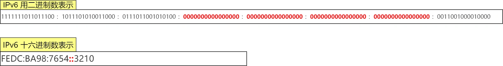
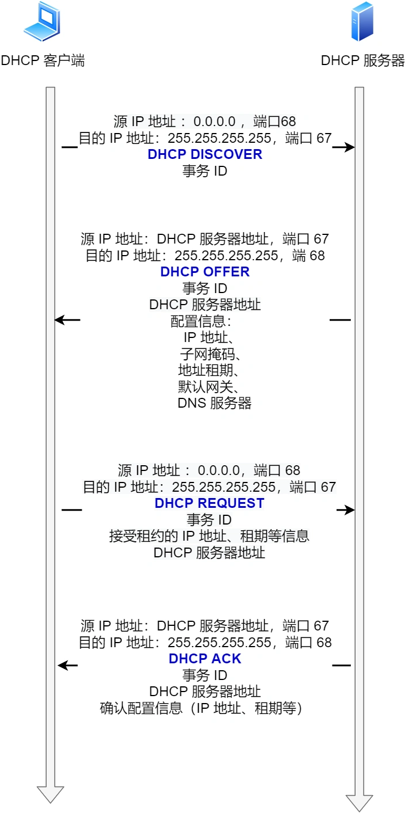
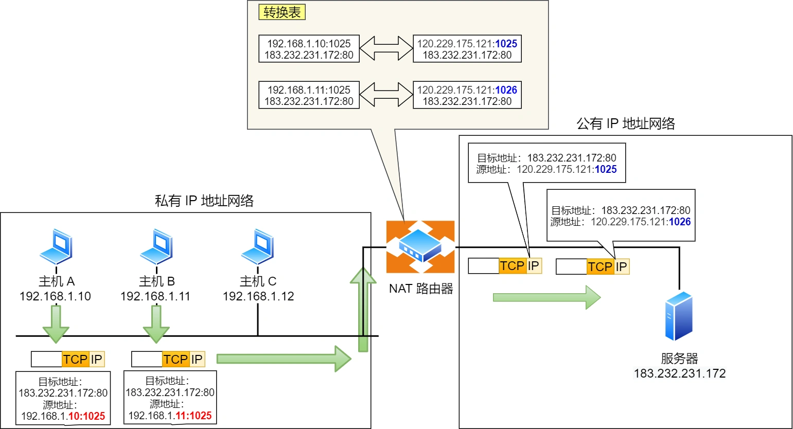
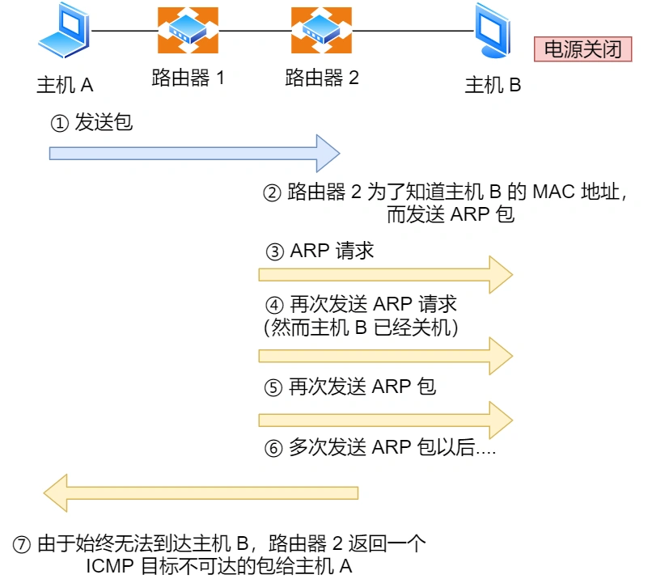

1 IP基本概念
IP协议在TCP/IP模型中处于第三层，即网络层，网络层的主要作用是实现主机与主机之间的通信，即点对点（end to end）通信。IP协议的作用就是在复杂的网络环境中将数据包从源主机传输发送到最终的目的主机。
2 IP地址
2.1 IP地址介绍
在TCP/IP网络通信中，每个设备都需要正确配置正确的IP地址，否则无法实现正常的通信。IP地址由32位正整数组成（这里主要指IPv4地址），在计算机上以二进制方式存储和处理，使用时为了方便人记忆和理解采用点分十进制，每8位为1组分成4组，每组之间用.分隔。

对于IPv4来说，地址最大值是2的32次方，接近43亿个地址，即最大允许43亿台计算机连接到网络，但是实际上IP地址并不是根据主机台数来配置，而是以网卡来配置。而像服务器、路由器这些具有2张及以上网卡时，它们也就拥有2个或更多的IP地址。
实际上并不是所有IP地址都是接入Internet的地址，IP地址有分类和特定的组成形式，同时还有NAT这样的技术让更多的设备接入互联网。
2.2 IP地址分类
Internet诞生之初IP地址还十分宽裕，计算机科学家们为IP地址设计了5个分类。

- A、B、C类地址
这三类地址由两个部分组成：网络地址 - 主机地址。这就类似于城市的不同街道和街道下的具体门牌号。
之所以要划分为网络号-主机号两部分是因为路由器寻址时，需要先寻找到目的主机所在的网络，这个网络就是通过网络号来标识的，然后再由网络内部转发到指定的主机，就好比快递到达目的城市集散地后进行分发，会先找到目的地所在的街道，然后再交给负责这个街道的小哥去派件。

计算这三类地址的最大主机数时，要用2 ^ 主机位数 - 2。
之所以要减去2，因为每一类IP地址都有两个特殊的主机号地址，不得分配给主机：
- 主机号地址全为1：广播地址，指该网络号下全部主机，用于网络内广播。
- 主机号地址全为0：网络地址，指该网络号代表的网络。
其中广播地址用于在一个链路中向所有相互连接的主机发送数据包，有两种类型：
- 本网广播地址：例如网络地址是
192.168.0.0/24，其中的一台主机向本网内的其他机器广播，广播地址为192.168.0.255，此时路由器不会对数据包做转发，这个数据包只有本地网络上的主机能收到，而不会到达其他的网络中。 - 直接广播地址：如果上述网络地址其中的一台主机向其他网络广播，例如广播地址为
192.168.1.255/24，这个数据包将被路由器转发给192.168.1.0/24这个网络，从而使这个网络上的所有主机都能收到这个包。因为直接广播存在，路由器一般会关闭对直接广播报文的转发。
- D、E类地址
D类地址是组播（Multicast）地址，用于将包发送给特定组内的所有主机，组播地址前4位都是1110，后面的28位用于多播组的编号，编号类型分为3类：
224.0.0.0 ~ 224.0.0.255：预留的组播地址，只能用于局域网，路由器不会转发。224.0.1.0 ~ 238.255.255.255：用户可用的组播地址，即可用于Internet。239.0.0.0 ~ 239.255.255.255：本地管理组播地址，可供内部网络使用，仅在特定本地范围有效。
IP地址分类使得路由器在解析寻址选路时直接判断每一位就能得到对应的分类，以及网络号和主机号，方便快捷，简单明了，但是同样带来了问题：
- 同一网络下没有地址层次：比如一个公司使用B类地址，但是又要给生产环境、测试环境和线上环境划分不同的地址层次，分类地址显然无法满足要求。
- 不能很好的与现实网络匹配：每个地址类型的划分导致该地址下的主机数量差距太大，比如一个B类地址下可以有6万台主机，但是一个C类地址下只能放254台主机，一个太大，一个太小，都不符合现实需求。
因此CIDR被解决解决IP地址分类的痛点。
2.3 CIDR
无类别域间路由CIDR（Classless Inter-Domain Routing），见名知义，即无分类的地址方案，对于任何一个32位的IP地址，都按网络号-主机号划分为两部分，网络号不再设置固定长度。
CIDR的表示形式是a.b.c.d/x，其中/x表示地址的前x位是网络号，网络号长度范围是0~32，这使得IP地址更具灵活性。比如10.100.122.2/24，表示这个网络的前24位是网络号，剩余的8位是主机号。
2.4 子网掩码与子网划分
CIDR的表示形式和子网掩码（subnet mask）的形式类似，可以理解为IP地址+子网掩码的另一种记号。子网掩码也是用来划分网络号和主机号的，其中网络号的位全为1，主机号的位全为0，结合IP地址就可以划分网络号和主机号。
比如IP地址是10.100.122.2，子网掩码是255.255.255.0，将IP地址与子网掩码做AND运算，就能得到网络号是10.100.122.0。这与CIDR的表示方法10.100.122.2/24含义是一致的。
子网掩码还有一个作用就是划分子网，子网划分实际上是将IP的主机地址再进行划分，也划分为两个部分：子网网络地址 - 子网主机地址。

事实上CIDR的本质就是利用子网掩码划分子网，来使得传统的分类IP地址可以被灵活调整网络号位数长度。假设对C类地址192.168.1.0，使用子网掩码255.255.255.192进行子网划分：C类地址网络号24位，主机号8位，根据子网掩码可知8位主机号中有2位被借用为子网网络号，于是划分出4个子网网络：00，01，10，11。

2.5 公有IP地址与私有IP地址
在A、B、C三类IP地址的中，每个类别下的地址还被具体分为公有IP地址和私有IP地址。

公有IP地址是唯一的、不可重复的、通过Internet可以直接访问的IP地址，由互联网名称与数字地址分配机构ICANN（The Internet Corporation for Assigned Names and Numbers）负责管理，这个机构中的IANA（Internet Assigned Numbers Authority）负责具体分配互联网IP地址，IANA下又按大洲的方式层层分配管理机构，比如中国由CNNIC机构进行管理。
而私有IP地址是特定网络内部可以自己管理、分配且可重复的IP地址，比如我们家里的路由器和隔壁家里的路由器就可能给我们的设备分配同样的IP地址。
2.6 IP地址与路由表
IP地址的网络地址部分用于进行路由控制，路由表（Routing table）记录着网络地址与该地址对应下一步应该转发到的路由器地址（Next hop），主机和路由器都有各自的路由表。
发送IP包时，首先从IP首部中取出目的IP地址，然后到路由表中和具有相同网络地址的记录做匹配，根据该记录的Next hop转发到下一个路由器。如果路由表中存在多条相同网络地址的记录，就按最长前缀匹配，即选择相同位数最多的网络地址。

一般在主机上还会使用一个特殊的IP地址127.0.0.1作为本地环回地址，对应的主机名是localhost。环回地址是在同一计算机上不同程序之间进行网络通信时使用的默认地址，使用这个地址作为目的IP地址时数据包不会流向网络。
3 IP分片与重组
上一章TCP篇中提过IP分片的大小是数据链路的最大传输单元MTU（Maximum transmission unit），不同局域网技术的使用目的和相应链路承载不同，因此MTU也不同，比如FDDI是4352字节，Ethernet是1500字节。
当IP数据报大小大于MTU时，在协议栈的IP层会进行分片。分片可以发生在原始发送端主机上，也可以发生在中间路由器上，但是分片之后的IP数据报到达目的主机后才进行重组。
当然，TCP篇提过，分片后的数据报还是很大，因为重传机制的存在，每次重传完整的分片会消耗和浪费网络资源，因此TCP引入了MSS进行分段，MSS会小于MTU，所以分段后的TCP报文段到达IP层就不用再分片了。如果使用UDP，则尽量不要发送一个大于MTU的数据包，也能避免分片和重组。
4 IPv6
IPv4的32位地址长度在现如今的互联网环境中显然不够用，事实上早在2011年IPv4地址就已被分配完。因此才有了IPv6出现。
4.1 IPv6的优缺点
IPv6有不少优点：
- 地址长度
128位，这个长度可以保证地球上每一粒沙子都能被分配到一个唯一的IP地址，地址数量惊人！ - 实现了自动配置，即使没有DHCP服务器也能自动分配IP地址，即插即用，方便快捷。
- 首部长度固定为40字节，去掉了首部校验和字段，简化了首部结构，减轻了路由器负荷，大大提高了传输性能。
- 有应对伪造IP地址的网络安全功能以及防止线路窃听的功能，大大提升了安全性。
但是IPv6与IPv4不兼容，不仅需要电脑、手机之类的设备支持，还需要网络运营商对现有的设备进行全面升级，所以普及比较慢。
4.2 IPv6地址
IPv6地址长度128位，采用每16位一组的十六进制表示，每组用:分隔：

如果连续出现0时，还可以省略跳过，直接写下一个冒号，一个地址中只允许出现一次连续的两个冒号：

IPv6地址和IPv4类似，也通过前几位标识IP地址的分类，主要类型有：
- 单播地址：一对一通信。
- 多播地址：一对多通信。
- 任播地址：通信最近的节点，最近节点由路由器协议决定。
- 没有广播地址。
而对于单播地址，IPv6又具体划分了三类单播地址，每类地址的有效范围不同：
- 链路本地单播地址：同一链路单播通信，不经过路由器。
- 唯一本地地址：同一网络的单播通信，相当于IPv4的私有IP地址。
- 全局单播地址：互联网的通信，相当于IPv4的公有IP地址。
4.3 IPv4与IPv6首部

相比于IPv4，IPv6在首部做了改进：
- 取消首部校验和字段：因为在数据链路层和传输层都会校验，IPv6直接取消了IP的校验。
- 取消了分片/重新组装相关字段：分片与重组是耗时的过程，IPv6不允许在中间路由器进行分片与重组，这种操作只能在源与目的主机，大大提高了路由器转发的速度。
- 取消选项字段：并没有消失，而是可能出现在IPv6首部中的「下一个首部」位置上，删除选项字段使IPv6首部成为固定长度的40字节。
5 IP协议相关技术
5.1 DNS
DNS（Domain Name System）域名解析系统负责将域名解析转换为IP地址，域名解析流程见第一章。
5.2 ARP和RARP
传输一个IP数据报时，确定了源和目的IP地址后，会通过主机路由表确定IP数据报的下一跳IP地址，然后通过下层数据链路层来传输，因此还需要确定下一跳的MAC地址。
ARP协议（Address Resolution Protocol）的作用就是借助ARP请求与ARP响应通过IP地址找到对应的MAC地址。
- 主机通过广播发送ARP请求，包的内容主要是想要获取MAC地址对应主机的IP地址。
- 链路中的所有设备都收到ARP请求，然后拆开包解析包里的内容，如果一个设备发现ARP请求包中的目标IP地址与自己的IP地址一致，就将自己的MAC地址填入ARP响应包然后返回给主机。
- 操作系统通常会把第一次通过ARP获取的MAC地址缓存起来，下次就直接从缓存中找到对应IP地址的MAC地址。不过缓存是有期限的，超过期限后缓存将被清除。
RARP协议（Reverse Address Resolution Protocol）与ARP协议作用相反，在已知MAC地址的情况下获取IP地址。例如将打印机服务器等小型嵌入式设备接入网络时经常会使用。
- 使用RARP协议需要一台RARP服务器，在这个服务器上注册设备的MAC地址及其IP地址，然后将这个设备接入网络。
- 该设备发送获取IP地址的请求，该报文携带自己的MAC地址。
- 服务器收到后返回该设备的IP地址，该设备收到响应后就取出并设置自己的IP地址。
5.3 DHCP
DHCP（Dynamic Host Configuration Protocol）是动态分配IP地址的服务应用，主要步骤如下：

- 发现：客户端首先发起称为DHCP发现报文（DHCP discover）的IP数据报，客户端没有IP地址也不知道DHCP服务器地址，使用的是UDP广播通信，广播目的地址
255.255.255.255（端口67，服务器监听端口），源地址0.0.0.0（端口68，客户端监听端口）。客户端将这个报文传递给数据链路层，链路层将帧广播到局域网下所有网络设备，网络上每一台安装了TCP/IP协议的主机都会接收到这种广播信息，但只有DHCP服务器才会做出响应。 - 提供：DHCP服务器收到DHCP发现报文时，用DHCP提供报文（DHCP offer）向客户端作出响应。该报文目的地址仍然使用IP广播地址
255.255.255.255，源地址就是该服务器的IP地址，并携带服务器提供的可分配的IP地址、子网掩码、默认网关、DNS服务器以及IP地址租用期，之后这个IP地址被暂时保留。 - 选择：客户端可以收到一个或多个服务器的DHCP提供报文，只选择接受第一个收到的DHCP offer，然后继续以目的地址
255.255.255.255，源地址0.0.0.0的广播方式回答一个DHCP请求报文（DHCP request），其中包含选定的IP地址配置内容和提供该IP配置的服务器的标识符（IP地址）。之所以要以广播方式回答，是为了通知其他所有的DHCP服务器，它将选择某台DHCP服务器所提供的IP地址，这样没被选择的服务器就能知道自己的offer被拒绝，让保留的IP地址重新变为可分配。之所以还以全0作为源地址，是因为这个阶段客户端只做出了选择，还没有配置。 - 确认：服务器用广播方式回复DHCP ACK报文对DHCP请求报文进行响应，应答所要求的参数。客户端收到DHCP ACK后，交互便完成了，客户端便能够在租用期内使用DHCP服务器分配的IP地址。
如果租约快到期，客户端会再次向服务器发送DHCP请求报文：
- 如果服务器同意继续使用，则用DHCP ACK报文进行应答，客户端收到后就继续延期使用；
- 如果服务器不同意，则用DHCP NACK报文进行应答，客户端收到后就停止使用该IP地址。
在DHCP交互中，全程使用的是UDP广播通信，如果DHCP客户端和服务器不在同一个局域网，因为路由器不会转发直接广播包，不得不给每个网络都配置一个DHCP服务器。这样显然很麻烦，因此有了DHCP中继代理，使对不同网段的IP地址分配可以由一个DHCP服务器统一进行管理。
- DHCP客户端广播向DHCP中继代理发送DHCP请求包，DHCP中继代理收到后单播发送给DHCP服务器。
- 服务器收到该包后再向中继代理返回应答，中继代理将此包广播给客户端。

5.4 NAT
IPv4的地址非常紧缺，CIDR虽然能减缓IPv4的耗尽速度，但是也犹如蚍蜉撼树，因此NAT被提出用来再次缓解IPv4地址耗尽问题。
NAT（Network address translation）的作用是将私有IP地址转换为公有IP地址，这样多个私网IP就可以对应仅一个公有IP。
最常用的NAT方式是端口多路复用（Port address Translation, PAT），在内部网络的所有主机对外访问时分别转换成不同的端口号作区分，从而使内部所有主机共享同一个公网IP，同时还能隐藏内部主机，有效避免攻击。使用PAT的方式可以被称为NAPT，即Network Address and Port Translation。

如上图中内网中两台主机同样端口号的应用访问外部服务时，都被转换成同一个公网IP，但用不同的端口做了区分，这种转换依靠于连接建立时在NAPT路由器上自动生成的转换表，进出的时候都进行地址和端口组合的转换，连接关闭后表也相应被删除。
NAT依然存在缺点：
- 外部无法主动与NAT内部主机建立连接，因为外部设备并不知道内部主机的网络信息。
- 转换表的生成与转换操作都会产生性能开销。
- 通信过程中如果NAT路由器重启，所有TCP连接都将被重置。
解决NAT的问题，主要手段有：
- 改用IPv6：公网IP足够多，每台电脑都可以有一个IPv6地址。
- NAT穿透技术：让客户端主机的网络应用程序自身发现自己位于NAT设备之后哦，主动获取NAT设备的公网IP，为自己建立端口映射条目，这样就不用NAT路由器来建立转换表了。
5.5 ICMP
互联网控制报文协议ICMP（Internet Control Message Protocol）的主要功能包括：
- 确认IP包是否成功到达目标地址
- 报告IP包发送过程中被废弃的原因
- 改善网络设置

ICMP大致有两大类：
- 查询报文类型：用于诊断的查询信息。
- 差错报文类型：通知出错原因的错误消息。
5.6 IGMP
因特网组管理协议IGMP（Internet Group Management Protocol）工作在主机（组播成员）和最后一跳路由之间。
IGMP报文向路由器申请加入和退出组播组，默认情况下路由器不会转发组播包到连接中的主机，只有主机通过IGMP加入到组播组并被路由器就记录到IGMP路由器表后，路由器才会转发组播包到对应主机。
IGMP报文采用IP封装，头部协议号为2，TTL字段通常设置为1，因为IGMP工作与主机直接相连的路由器，只有1跳。
原著：小林coding图解网络